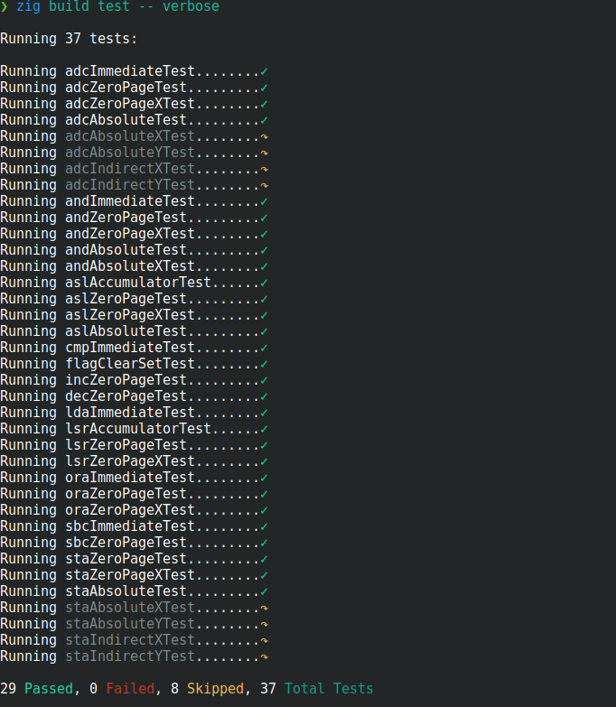
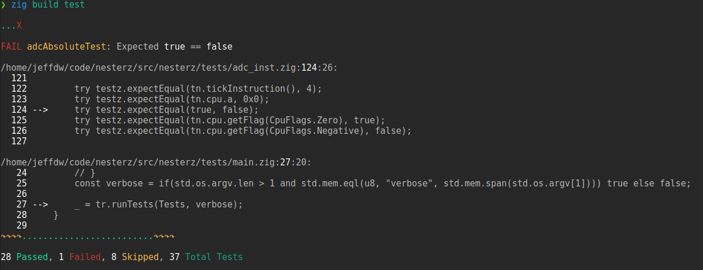

Rust vs. Zig and testz
Jeff DeWall 9 min read January 07, 2024 #Rust #ZigEarlier this year I made the switch from using C++ on my hobby projects to trying out Rust. I spent about 6 months of hobby night-time programming time porting over my 2D game engine and the bulk of my 6502 CPU emulator project. There are a lot of aspects of Rust that are great, but I got tired of fighting the borrow checker left and right. I still feel like I have a hard time expressing myself in Rust.
I had heard about and looked at the Zig programming language before and really liked some of its core concepts such as comptime for doing meta-programming in a much cleaner way than I've seen before. This was back when it was around 0.7 and it was pretty rough around the edges in many other areas though.
I had another look towards the end of summer and found with version 0.11 it struck a chord with me and I've been using it ever since, getting further into a new porting exercise for my 2D game engine and 6502 CPU emulator in less than half the time it took me in Rust. I also wrote a small unit testing library for Zig called testz to improve my testing development flow.
Rust Pros and Cons
Rust is a great language and things like cargo and the trait system are really nice. I still think C++'s biggest failure is not having a comprehensive and default package manager yet.
Rust's trait system for defining interfaces and still allowing easy static method dispatch is a huge strength and something I'd like to see brought into Zig more explicitly.
The issue I found with Rust was that the borrow checker is trying to save me from problems that I personally just don't run into often enough to make it worth it.
I tend to work on simple utilities and game projects for fun - if they crash it isn't the end of the world. For secure software development, I love the fact that Rust exists with its strong guarantees around memory safety. I just wish there was a laxer mode where I didn't need to pepper lifetimes around as much or needed to use awkward multiple layers of generics to express a simple shared link between data structures.
And, no, wrapping everything in unsafe is not a real answer.
The zealotry of the community in Rust that you see in forums, although not something I've experienced myself directly, is an aspect that really turns me off of wanting to invest in the language as well.
Example Rust Downside
While working on my 2D game engine port in Rust, I wrote a tile map loader and renderer for Tiled maps. I had been working on my CPU emulator project for a while and had a decent grasp of things, but as soon as I ventured into slightly more interesting memory layouts and memory sharing schemes, like a list structure that needs to have references to a sibling list's objects, things got a lot more difficult much more quickly.
In a Tiled map, you have a bunch of tile Layers and they need to access a TileSet. A TileSet contains Tiles with properties that can be used in the layers so you can store attributes for your game, like if a tile should do damage, etc.
Getting to the point of adding a function to the Layer to get a Tile object using the tile layer coordinate to look it up, took me around a week after getting all of the Tiled map XML parsing, lifetime handling and figuring out where to use Rc<RefCell<T>> to reference things properly between the Layer and TileSet (Here is an article with some more information on Rust's different memory structures for those interested). It wasn't too bad within the module itself, but once I wanted to expose an optional reference to the Tile to the user of the module, I had to jump through some hoops:
In this case, I explicitly only cared about single-threaded use, hence the Rc rather than an Arc. But, getting everything working in the larger module still took me about a week, as I mentioned, and I found myself simply not enjoying the project and struggled to stay motivated.
Same Exercise in Zig
To break things up, I started playing with Zig, going through the ziglings exercises and making a couple of toy programs. Then I thought, I might as well do a port of my projects from Rust to compare the developer experiences.
Zig is trailing Rust in terms of tooling, and for example the package management is really new and was hard to get working. However since Zig is basically a better version of C, it gets rid of many of the annoying aspects of C++, adding some modern syntax sugar and nice new features of its own while still being open enough to let me express things more easily than in Rust.
I found I didn't need and rely on tooling in Zig as much as I was doing in Rust and still managed to have a higher velocity. I also found I could simply refer to the online docs or even jump into the standard library code and actually understand things pretty quickly when needed. I don't typically go that route in other languages as it almost always seems more daunting, but in this case it's been pretty easy to look at the standard library on Github to answer any questions I have.
While writing the equivalent XML parsing and rendering logic for Tiled maps, I managed to have a working module in about 3 hours. I ran into a single memory bug that caused a panic which took me about fifteen minutes to debug. I was returning a reference to a local variable that went out of scope and was easy to spot once I had the stack trace to look at.
The Zig version of the function above ended up looking like:
pub fn tile(self: *TileLayer, x: i32, y:i32) ?*Tile {
if(self.tileset == null) return null;
if(x < 0 or x >= self.size.x) return null;
if(y < 0 or y >= self.size.y) return null;
const tsIdx: usize = @intCast(self.tileDataUnchecked(x, y));
return self.tileset.?.tile(tsIdx);
}
When I'm somewhere around 10x more efficient at writing a module in a language I've only been playing with for a month versus a language I was learning for 6 months, there's clearly a learning cliff to Rust that makes it difficult for a developer coming from a C++ background. That friction will eventually cause people to push back against the language and look for alternatives.
Areas Where Zig Can Improve
The ability to iterate quickly is really important, and Zig makes what I think is a mistake in making what should be warnings into errors. Two examples are unused variables and non-mutated variables needing to be changed to const. I would like a compiler flga or build option to allow me to turn off those errors or change them to just warnings - they may be code smells, but that doesn't mean I want to continually pause my development loop to fix them.
Another area is documentation and finding tutorials online that are still relevant. Out-of-date tutorials come from the fact that Zig is evolving pretty quickly and some larger breaking changes can come in making older blog articles no longer work out of the box. For example, in 0.11, the names of casting builtins got renamed, so @floatToInt became @intFromFloat. This isn't hard to deal with, but you stumble upon these sorts of issues from time to time looking at other blogs and it can be confusing.
A third area for improvement is the zig test feature. Zig lets you embed unit tests in your modules, but I found the test output, ability to setup fixtures and setup tests in different files to not work the way I wanted. To that end, I created a small library I'm working on called testz which lets you set up a more traditional test program and run through functions you mark as tests. Another article I found, also details similar issues with how the builtin test functionality works.
Testz Library
The library I wrote is currently pretty simple, but lets you discover tests by passing in modules where test function names end with Test. There are both simple and verbose output modes and you can skip test functions by prepending skip_ to a function. Being used as a simple executable means that fixture setup used across multiple tests is also quite easy.
Here's what my summary output for unit tests for my 6502 CPU emulator looks like with testz:
And the verbose output mode:
The nice part is that the work to discover tests and build up the list of functions to run is done at compile time and was relatively easy to get working. In other languages I've often needed to resort to external shell scripts or required more explicit setup by the user. Zig's comptime feature makes this really clean though.
I didn't like how the stack traces looked using the builtin versions, but I was able to look at the code in the standard library and pull it out into a modified version that adds more context around each stack frame and ignores frames before the call to the test runner. This gives something like the following for a contrived assertion failure:
The library still needs a lot of touching up, like a proper ReadMe and more examples. I'll continue tinkering with it as time goes on. Feel free to open an issue or reach out if you have a feature request pr find the library useful!
In the meantime I'll continue playing with my game engine and CPU emulator projects - they've proven to be meaty enough to really get acclimated to a new language. Now I just need to actually write a game rather than rewriting the engine over and over 😆